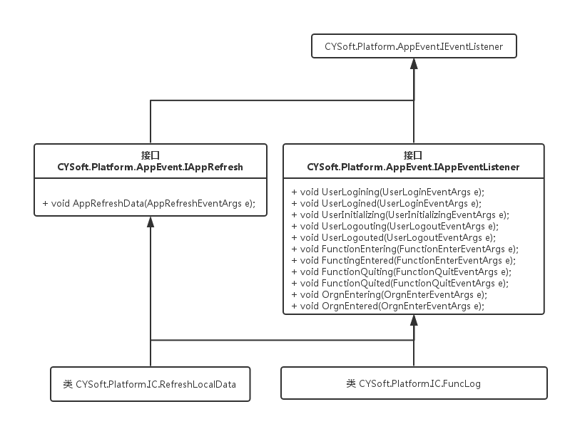

[toc]
## 功能概述
- 作用:
- 通过反射加载dll 内命名控件, 完成相应事件方法的注册. 首先来看目标类的继承体系:
- 加载配置文件: "\CYSoft.Platform\Debug\Config\AppExpansion.xml" 路径: 内容:
```
<!--<AppEvent>
<Code>SysParmr</Code>
<Name>系统变量</Name>
<AssemblyName>CYSoft.A9</AssemblyName>
<ClassName>CYSoft.A9.ParmInit</ClassName>
</AppEvent>-->
<AppEvent>
<Code>SysParmr</Code>
<Name>系统变量</Name>
<AssemblyName>CYSoft.Platform.IC.dll</AssemblyName>
<ClassName>CYSoft.Platform.IC.FuncLog</ClassName>
</AppEvent>
<AppEvent>
<Code>HnadleClearCacheData</Code>
<Name>手工清除缓存数据</Name>
<AssemblyName>CYSoft.Platform.IC.dll</AssemblyName>
<ClassName>CYSoft.Platform.IC.RefreshLocalData</ClassName>
</AppEvent>
<AppEvent>
<Code>AppUnReadMsg</Code>
<Name>刷新平台未读消息</Name>
<AssemblyName>CYSoft.Platform.UI.Main.exe</AssemblyName>
<ClassName>CYSoft.Platform.UI.Main.FrmMain</ClassName>
</AppEvent>
```

[toc]
## 举例登录初始化时 - 设置相应 `UserLoginEventArgs`属性为登录类型, 登录后, 反射后如果 目标类型 存在于如图中的继承体系 中, 则**type**不为**null**, 这样, 就执行对应方法. 如果不是, 例如虽然配置文件中包含了**`CYSoft.Platform.UI.Main.FrmMain`**这样的类型, 但是没有实现任何接口, 所以导致不会有方法执行.
> 如上 更新于 2016年4月22日.
- `FrmFunctionExp`窗体在 `MainForm`窗体中左侧构成， 加载时窗体内控件已包点击事件响应方法： `treeList1_MouseDoubleClick`, 通过类`Common.Funciton` 中 `InRow` 计算bool方法判断是否执行 `FunIn` 方法，其中 new `CYSoft.Platform.AppEvent 空间下 .AppFrameworkEventArgs` 类型，传入`AppEvent.AppEventInit.InitEventListener()`完成事件注册, 如果自身暴露的事件 `FuncInEvent` 在 `MainForm`窗体中已经注册的话, 则执行 调用.
## 静态方法 AppEventInit.InitEventListener() 执行过程.
- 类静态变量 mInstanceConfig 指明参数来源构造路径 `ParmInfo.ConfigInfo.AppExpansionFile`内容为 `AppExpansion.xml`文件.
- 循环获取配置AppEvent 节点下所有指明dll及方法, 然后通过反射获取类型Type.
- 通过判定传入的事件类型如, `UserLoginEventArgs`, `UserLogoutEventArgs`, `FunctionEnterEventArgs` 等, 本例子中为 `FunctionEnterEventArgs`类型来执行 `Activator.CreateInstance(type)`创造的Type里面的对应方法. 譬如, 我获得`ParmInit`类型, 现在是 `FunctionOnEventArgs`, 那么根据逻辑, 执行`UserLogined` 方法.
- ***总结***: 接口`CYSoft.Platform.AppEvent.IAppEventListener` 接口定义了 App 事件接口类型. 而诸如 `CYSoft.CY02.Common.ParmInit` 等Type参数实现该接口后, 针对需要实现的方法, 譬如 `UserLogined`等, 完成具体的业务实现. 最终的效果解释外部dll, 如CY02等, 只需要在xml中配置好相应节点, 然后配置对应的类型实现相应的接口后, 系统会在需要的时候自动加载相应的方法.